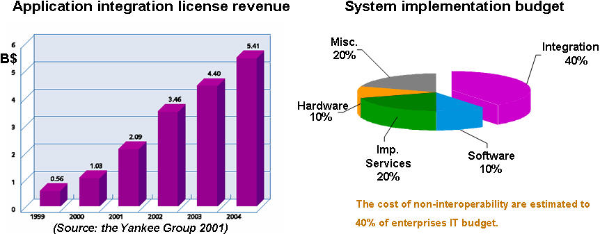
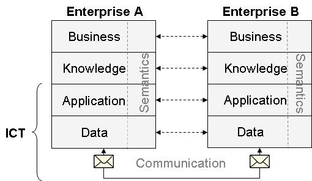
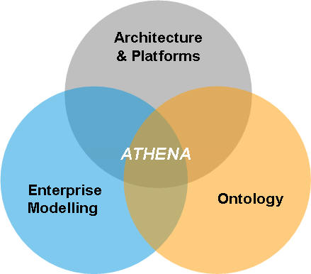

")

Background and motivation
What is interoperability?
System interoperability is a growing interest area, because of the continuously growing need of integration of new, legacy and evolving systems, in particular in the context of networked businesses and eGovernment. Enterprises today face many challenges related to lack of interoperability. Enterprises need to adapt more quickly to changes in the business and economic market and is required to become more responsive to customer needs. Although enterprises are heavily dependent on information communication technology (ICT) solutions in their day-to-day business operations, the solutions are often inflexible and difficult to adapt to meet the requirements of those changing enterprises [Truex, et al. 1999].
Enterprise applications and software systems need to be interoperable in order to achieve seamless business across organisational boundaries and thus realise virtual networked organisations. The current ICT solution space suffers badly from lack of interoperability. ICT systems are not able to sufficiently exchange information, and services offered by one system are not compatible with other systems. The effect of non-interoperability results in large budgets being spent on time-consuming system integration tasks.
The ATHENA project adopts the IEEE definition of interoperability as
“the ability of two or more systems or components to exchange information and to use the information that has been exchanged” [IEEE 1990].
Please note that the term interoperability can be understood in a technical way or in a broad way, taking into account social, political and organisational factors. In the context of ATHENA the notion of interoperability is not limited to ICT systems, but also concerns the business processes and the business context of an enterprise. Therefore, ATHENA considers interoperation only meaningful, when all relevant levels of an enterprise are addressed. The diversity, heterogeneity, and autonomy of software components, application solutions, business processes, and the business context of an enterprise must be considered.
Industrial need for interoperability
Lack of interoperability is today costing industry huge sums of money. An investigation performed by the Yankee Group in the US shows that some 40% of ICT project costs in most major manufacturing industries can be attributed to solve interoperability problems. The enterprise applications integration (EAI) market is projected to grow to some 7 bill US dollars in 2006 making it the biggest ICT market ahead of the enterprise architecture market.

Economic reasoning for interoperability
Probably the most important issue related to interoperability is economical in its nature. It refers to the obtaining performing systemic behaviours within specific business environments even if the basic components and/or sub-systems have been developed independently and in different technological and business environments. Interoperability would make it possible to take advantage of scale and/or scope economics, in the development of the components, and to avoid, all the same, unbearable costs of development and/or integration each time the business or technological environments change.
Interoperability solutions have to address two big economics-related issues:
- looking to the future: to achieve the capability of obtaining fully integrated systemic functionalities, which often requires to design and develop the solutions from scratch together with the independent development and use of the components;
- looking to the past: to avoid jeopardising the huge investment made in existing systems, while accepting imperfect interoperability.
There are two accepted ways to achieve this:
- Defining standard applications and interface development environments, so that natively interoperable software systems can be specified, designed and implemented to respect the standards.
- Defining standard and open bridges (middleware) to consider organisational-semantic-technical aspects, so that natively non-interoperable software systems could achieve some predefined level of interoperability (i.e. SLA contracts).
In any case the goal is to operate across a boundary as if the boundary does not exist: interoperability happens at boundaries over which the information is exchanged; to agree where these boundaries should be is a basic step toward achieving it.
Islands of interoperability
Specific choices of where to put the boundaries may limit interoperability to specific classes of components and/or subsystems, and to certain specific business and/or normative contexts.
This does not mean that these components do not interoperate, it rather means that their interoperability is bounded within islands of interoperability, that are more ore less large depending on the number of components and or environments, that comply with the specific design of their interfaces.
The dimensions of the interoperability islands usually depend on economic balances that are conditioned by normative and/or business contexts.
In conclusion, we can say that interoperability is an enabler/facilitator for seamless business enterprise networks, but it is neither necessary, nor sufficient. A mix of Technical and Economic reasoning could indeed suggest not achieving full enterprise interoperability in certain business contexts, where interoperability costs would exceed interoperability benefits (necessity), while "soft issues" like legal, social, contractual, political, psychological, cultural ones could definitively hinder ebusiness also in presence of a full, potential enterprises interoperability.
ATHENA's approach to interoperability
ATHENA – Advanced Technologies for interoperability of Heterogeneous Enterprise Networks and their Applications - is an Integrated Project sponsored by the European Commission in support of the Strategic Objective “Networked businesses and government” set out in the IST 2003-2004 Workprogramme of FP6. Building upon an ambitious Vision Statement “By 2010, enterprises will be able to seamlessly interoperate with others”, ATHENA aims to make a major contribution to interoperability by identifying and meeting a set of inter-related business, scientific & technical, and strategic objectives.
The ATHENA programme of work is defined for producing results that span the full spectrum of interoperability from technology components to applications and services, from research & development to demonstration & testing, and from training to evaluation of technologies for societal impact. In ATHENA, Research and Development is executed in close synergy and collaboration with Community Building, for ensuring that solutions to multi-disciplinary research challenges are of optimal industrial relevance leading to broad uptake by the end user.
The ATHENA consortium currently comprises 19 leading organisations in research, academia, industry and other stakeholder communities including SMEs, working collaboratively in pursuit of a common set of objectives in interoperability.
ATHENA is committed to creating a long term impact for advancing interoperability which is mainstream, inclusive and has critical mass. To this end, ATHENA is initiating an open, neutral and independent Enterprise Interoperability Centre (EIC) to which all stakeholders, in both private and public sectors, are invited to participate.
Holistic approach to interoperability
ATHENA adopts a holistic perspective on interoperability in order to achieve real, meaningful interoperation between enterprises. ATHENA builds upon the FP5 thematic network IDEAS (Interoperability Development for Enterprise Applications and Software, IST-2001-37368). The IDEAS network identified the need for a structured approach to collect, identify and represent the current state of the art, vision statements, and research challenges. It defined a framework for capturing and inter-relating this information from many perspectives called the IDEAS Interoperability Framework.
- The business layer is located at the top of the framework. In this layer, all issues related to the organisation and the operations of an enterprise are addressed. Amongst others, they include the way an enterprise is organised, how it operates to produce value, how it takes decisions, how it manages its relationships (both internally with its personnel and externally with partners, customers, and suppliers).
- The knowledge layer deals with acquiring a deep and wide knowledge of the enterprise. This includes knowledge of internal aspects such as products, the way the administration operates and controls, how the personnel is managed, and so on, but also of external aspects such as partners and suppliers, laws and regulations, legal obligations, and relationships with public institutions.
- The ICT systems layer focuses on the ICT solutions that allow an enterprise to operate, make decisions, exchange information within and outside its boundaries, and so on.
- The semantic dimension cuts across the business, knowledge and ICT layers. It is concerned with capturing and representing the actual meaning of concepts and thus promoting understanding.

To achieve meaningful interoperability between enterprises, interoperability must be achieved on all layers:
- Interoperability at business level should be seen as the organisational and operational ability of an enterprise to factually cooperate with other, external organisations, whether these organisations are enterprises or public institutions.
- Interoperability at knowledge level should be seen as the compatibility of the skills, competencies, and knowledge assets of an enterprise with those of other, external organisations.
- Interoperability at ICT systems level should be seen as the ability of an enterprise’s ICT systems to cooperate with those of other, external organisations.
- To overcome the semantic barrier, which emerges from different interpretations of syntactic descriptions, precise, computer processable meaning must be associated with each concept. It has to be ensured that semantics are exchangeable and based on a common understanding to be indeed a means to enhance interoperability.

Multidisciplinary approach to interoperability
The originality of the ATHENA project is to take a multidisciplinary approach by merging three research areas supporting the development of interoperability of enterprise applications and software.
- Architecture & Platforms: to provide implementation frameworks,
- Enterprise Modelling: to define interoperability requirements and to support solution implementation,
- Ontology: to identify interoperability semantics in the enterprise.

The multidisciplinary approach also represents some challenges. While ATHENA advocates a holistic and multidisciplinary approach, each of the disciplines may have different approaches that may be overlapping or even competing. We need to describe the various alternative approaches and provide guidelines for which to select depending on the context.
Model-driven approach to interoperability
When creating a model, one must have a clear understanding of what the model is meant to and not meant to illustrate. Many aspects are hidden in a model; after all, one of the main purposes of models is to abstract from irrelevant details. One can, however, abstract along different dimensions, that is, one can choose to leave out different types of information of a system depending on the purpose of the model. For instance, one can choose to depict processes and activities of the system under consideration or one can choose to depict the information this system contains and how the different information elements are related.
We use model to refer to a specification of an entity in the real world. To be a model, this specification needs to have a commonly agreed semantics and a well-defined syntax. In other words, models are specifications that have a certain format (typically in a modelling language) and where all symbols in the language have a predefined and commonly understood interpretation. The figure below shows the process of system modelling; one studies a real world phenomenon which is the system under consideration (either an existing system or an “idea” on how to build a new system), and creates a model using a chosen modelling language.

A common characteristic of the ATHENA solutions is the fact that they are model-driven. The universe of discourse is the collaborative enterprise and the ICT systems used by the enterprises participating in the collaboration. The ATHENA solutions focus on modelling the interactions and information exchanges that occur during such collaborations, both on a business requirements level and a technical solution level.